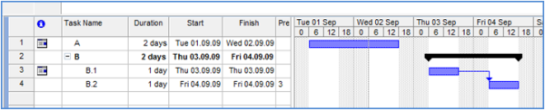
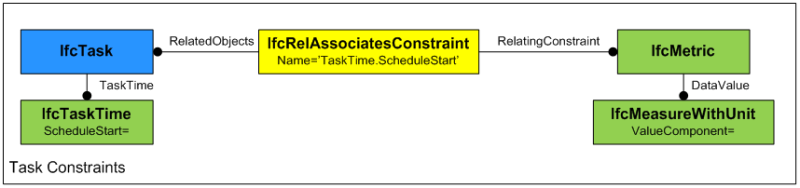

Instance diagram
Instance diagram| Tâche | |
| Aufgabe |
An IfcTask is an identifiable unit of work to be carried out in a construction project.
A task is typically used to describe an activity for the construction or installation of products, but is not limited to these types. For example it might be used to describe design processes, move operations and other design, construction and operation related activities as well.
Quantities of resources consumed by the task are dealt with by defining the IfcElementQuantity for the resource and not at the instance of IfcTask.
HISTORY New entity in IFC1.0. Renamed from IfcWorkTask in IFC2x.
IFC4 CHANGE Attributes TaskTime and PredefinedType added. IfcMove and IfcOrderRequest has been removed in IFC4 and are now represented by IfcTask. IfcRelAssignsTasks relationship has been removed as well.
Attribute use definition
Each occurrence of IfcTask is given a name that is indicative of its content (IfcRoot.Name). A textual description of the task may be provided and this may be further elaborated by a narrative long description (IfcProcess.LongDescription). A work method may be declared for the method of work used in carrying out a task. A task is identified as being either a milestone task or not. A milestone task is defined by the marker IsMilestone. and has no duration. A status and priority for each task may also be set.
Time and duration use definition
Compared to previous IFC releases, basic task time information (scheduled start time, scheduled finish time, duration) is now directly attached to IfcTask through the TaskTime attribute. Regular tasks are defined through IfcTaskTime. Recurring tasks are defined through IfcTaskTimeRecurring. In case a regular task is derived from a recurring task both tasks should be linked together through a IfcRelNests relationship, where IfcRelNests.IsNestedBy points to the recurring task and IfcRelNests.Nests points to all regular tasks that have been derived from the recurring task.
Representation of other activities
The use definitions for IfcTask have been generalised to represent other activities as well, including activities that had been defined by own entities in previous IFC releases. This includes
IfcTask represents an order that might be carried out by a Helpdesk acting the role of interface for the organization between the facility user and the functional requirement of fulfilling their needs. The actual task represented by the IfcTask entity is turning a request into an order and initiating the action that will enable the order to be completed. The IfcProjectOrder or one of its subtypes including maintenance work order, is related to the IfcTask using IfcRelAssignsToControl.
IfcTask can also be used to describe an activity
that moves people, groups within an organization or
complete organizations together with their associated
furniture and equipment from one place to another. It thus
replaces the previous IFC entity IfcMove. The functionality
is represented in IfcTask as follows:
The following concepts are inherited at supertypes:
Object Typing
The Object Typing concept applies to this entity as shown in Table 14.
| ||
Table 14 — IfcTask Object Typing |
The IfcTask defines the anticipated or actual occurrence of any task; common information about task types is handled by IfcTaskType.
EXAMPLE It includes fixed duration, fixed unit or fixed work. An IfcTask can be aggregated to a task type in order to specify a task sequence or any time related information, e.g. the duration of a task. Please see the documentation of IfcTaskType for further information.
Property Sets for Objects
The Property Sets for Objects concept applies to this entity as shown in Table 15.
| ||||
Table 15 — IfcTask Property Sets for Objects |
Object Nesting
The Object Nesting concept applies to this entity.
IfcTask may be contained within an IfcTask using the IfcRelNests relationship. An IfcTask may in turn nest other IfcTask, IfcProcedure or IfcEvent entities. Such nesting indicates decomposed level of detail. From IFC4 onwards it is required to have a summary task (root of all tasks), which is used to define a link to the work plan or work schedule. All subtasks of the summary tasks are then implicitly linked to this work plan or work schedule. Please note that the summary task is used for data organization and not meant to store typical task information as defined by the user. It is therefore recommended that the summary task is hidden from the user to avoid confusion. Please also note that IfcRelNests is used to show the dependency between regular tasks and recurring task definitions (please see the section about time and duration use definitions).
As shown in Figure 104, the installation of a number of items of equipment within a particular space may be the subject of a single task which is identified as 'fix equipment in space 123'. IfcTask represents the occurrence of a work performance of a type of process in a construction plan.
 |
Figure 104 — Task visualization |
A task may nest other tasks as sub-items; the nesting relationship is modeled by IfcRelNests as shown in Figure 105. For example, the construction of a stud wall may be designated as a nesting task named 'install wall #1' including other tasks such as 'install dry wall', 'install studs', 'wall taping', and 'erect wall' as sub-processes. A value that indicates the relative tree view position of the task (in comparison to the tree view position of other tasks and the task hierarchy defined by IfcRelNests).
The task order information that is used for viewing purposes is derived from the order defined by the IfcRelNests relationship and thus is independent of the logical task order defined through IfcRelSequence. The hierarchy and order defined through IfcRelNests enables to order the tasks in a tree view or list view structure.
 |
Figure 105 — Task nesting relationships |
Sequential Connectivity
The Sequential Connectivity concept applies to this entity.
The relationship IfcRelSequence is used to indicate control flow. An IfcTask as a successor to an IfcTask indicates logical sequence how these tasks should be performed. IfcTask's can be triggered or can trigger IfcEvent's, which is also defined through the relationship IfcRelSequence.
Control Assignment
The Control Assignment concept applies to this entity.
Occurrences of IfcTask may be assigned to an IfcWorkControl (either a work plan or a work schedule) through IfcRelAssignsToControl. Please note that the IfcRelAssignsTasks relationship class has been removed in IFC4 and is no longer available.
Process Assignment
The Process Assignment concept applies to this entity.
It is suggested to use the 'summary task' (root element of the task hierarchy that is required for task management purposes) to assign all subtask to a work plan or work schedule. Resources used by tasks are assigned by IfcRelAssignsToProcess.
Product Assignment
The Product Assignment concept applies to this entity.
Object Classification
The Object Classification concept applies to this entity.
An IfcTask may be assigned a Work Breakdown Structure (WBS) code. A WBS code is dealt with as a classification of task and is associated to a task occurrence using the IfcRelAssociatesClassification relationship class. As well as being to designate the code, the classification structure also enables the source of the work breakdown structure classification to be identified.
Object Constraint
The Object Constraint concept applies to this entity as shown in Table 16.
| ||||||||
Table 16 — IfcTask Object Constraint |
Constraints may be applied to a task to indicate fixed task duration, fixed start or fixed finish (see Figure 147). The relationship IfcRelAssociatesConstraint is used where RelatingConstraint points to an IfcMetric and RelatedObjects includes the IfcTask. IfcRelAssociatesConstraint.Name identifies the attribute to be constrained using a period (".") to dereference; for example, "TaskTime.ScheduleStart" refers to the ScheduleStart attribute on the IfcTaskTime entity referenced on the TaskTime attribute. The following attributes may be constrained (see Table 11 with Constrained Attribute):
A "manual scheduled task" is indicated with ConstraintGrade=HARD and Benchmark=EQUALTO for both TaskTime.ScheduleStart and TaskTime.ScheduleFinish.
 |
Figure 106 — Task constraints |
XSD Specification:
<xs:element name="IfcTask" type="ifc:IfcTask" substitutionGroup="ifc:IfcProcess" nillable="true"/>EXPRESS Specification:
| ENTITY IfcTask |
| SUBTYPE OF IfcProcess; |
|
| WHERE |
|
| END_ENTITY; |
Attribute Definitions:
| Status | : |
Current status of the task.
NOTE Particular values for status are not specified, these should be determined and agreed by local usage. Examples of possible status values include 'Not Yet Started', 'Started', 'Completed'. |
| WorkMethod | : |
The method of work used in carrying out a task.
NOTE This attribute should not be used if the work method is specified for the IfcTaskType |
| IsMilestone | : |
Identifies whether a task is a milestone task (=TRUE) or not
(= FALSE).
NOTE In small project planning applications, a milestone task may be understood to be a task having no duration. As such, it represents a singular point in time. |
| Priority | : | A value that indicates the relative priority of the task (in comparison to the priorities of other tasks). |
| TaskTime | : |
Time related information for the task.
IFC4 CHANGE Attribute added |
| PredefinedType | : |
Identifies the predefined types of a task from which
the type required may be set.
IFC4 CHANGE Attribute added |
Formal Propositions:
| HasName | : | The Name attribute should be inserted to describe the task name. |
| CorrectPredefinedType | : | The attribute ObjectType must be asserted when the value of PredefinedType is set to USERDEFINED. |
Inheritance Graph:
| ENTITY IfcTask |
| ENTITY IfcRoot |
|
| ENTITY IfcObjectDefinition |
| INVERSE |
|
| ENTITY IfcObject |
|
| INVERSE |
|
| ENTITY IfcProcess |
|
| INVERSE |
|
| ENTITY IfcTask |
|
| END_ENTITY; |
 Link to this page
Link to this page